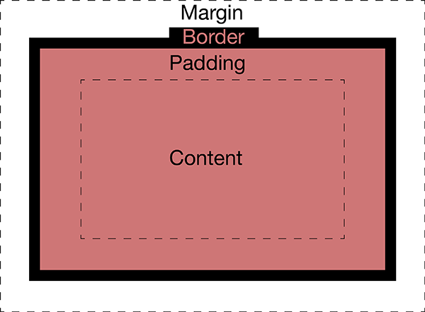
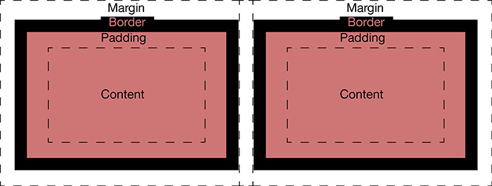
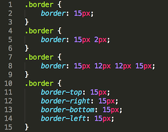

Technical Blog: Week 2. Margin, border and padding.
Margins, borders and padding allow you to manipulate in HTML the layout, distribution or arrangement of an element (an element could be an image, some text, or a lot of text among others). They do so by allowing you to determine the inner (padding) and outer (margin) spacing of an element. This means that when you modify the padding, you set where your content will sit in reference to the border of that same element, whereas the margin determines the location of that element in regards to the elements around it.The padding and border not only can be defined in terms of width but also color as they form part of the element. Margin on the other hand, eventhough adding to the total width of the element, is not contained within it, so it will always be transparent.
It must be noted that the normal behaviour of margins is to overlap, which is denominated collapsing margins. With that in mind if your webpage was 250px wide, and your elements had the following values: width 80px, padding 10px, border 10px and margin 3px, they would still fit the page correctly, in spite the fact that each element is 126px wide.
You can define the values of the border, margin and padding in one of four ways. All of them together, in groups of two, each one individually or each one in a single line. If you use groups of twos, top and bottom will be the first group, and left and right the second. On the other hand, if you define each value individually in the same line, HTML will interpret it in a clockwise fashion: first value top, second right and so on. You can see each way below, respectively (this border example could be applied to either padding or margin).
